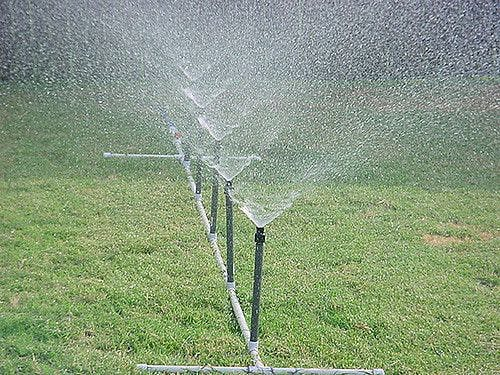

The automatic water sprinkler system is a firefighting system with water as an extinguishing medium. This water flows from the sprinkler heads under a calculated pressure and flow to cover the fire site. These heads are distributed close to the ceiling, and work to cover the entire area below with water. These heads are fed by a network of The system has a source of water that works to provide it with a flow rate and pressure, the diameters of which are geometrically arranged, the pipes, to the degree of danger to the facility, and a sufficient quantity to extinguish the fire according to